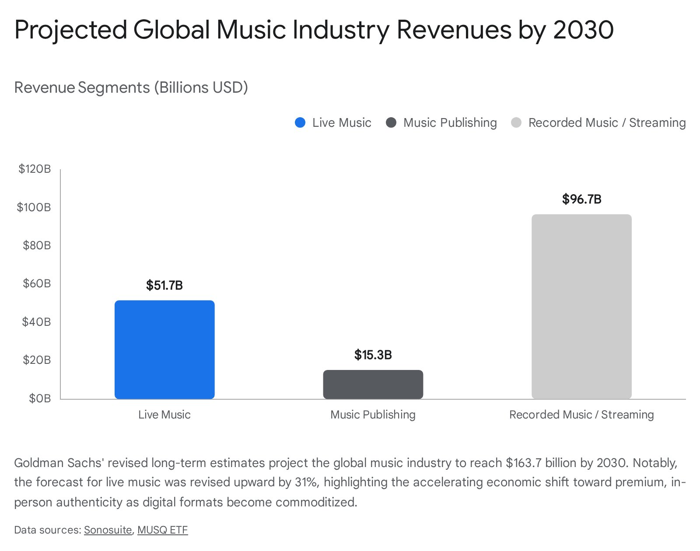
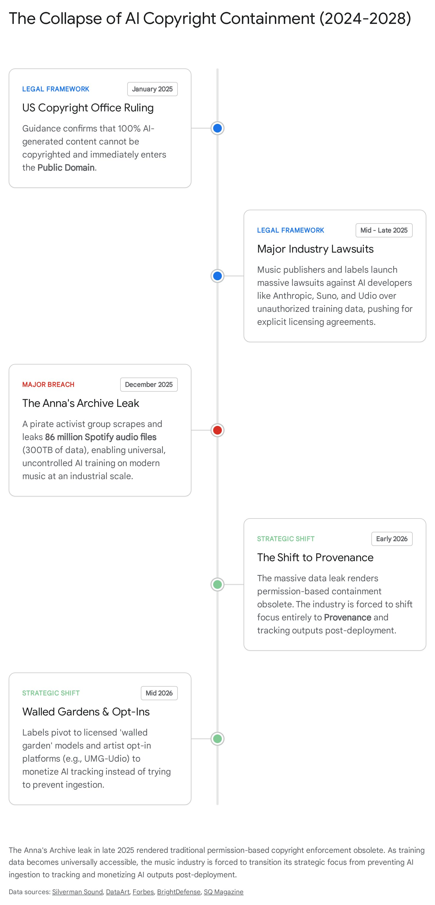
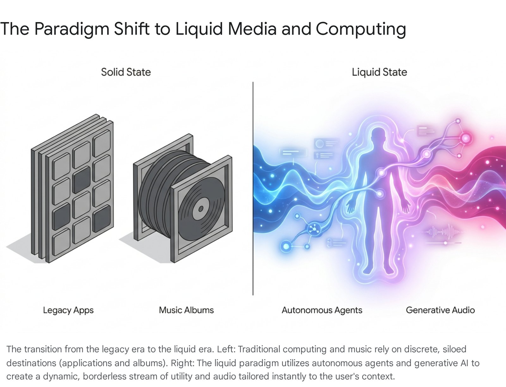

The Metamorphosis of Digital Infrastructure
The digital economy is currently undergoing a structural metamorphosis unparalleled since the transition from desktop computing to mobile ecosystems. In the software development sector, this shift is characterized by the rapid obsolescence of imperative programming and the rise of intent-driven "vibe coding." Concurrently, this evolution is dismantling the traditional, monolithic application structure, paving the way for a "liquid operating system" that dynamically recomposes itself around the user's immediate context.
This technological liquefaction is not confined to software engineering. It is aggressively bleeding into adjacent creative economies - most notably the music industry. The historical parallels are striking: just as artificial intelligence has abstracted the friction of writing code, generative audio models have abstracted the friction of musical composition and production. Music is becoming extraordinarily cheap, infinitely scalable, and hyper-specialized. The album, much like the traditional software application, is dissolving into a continuous, liquid stream of functional audio generated on demand.
This report maps the convergence of these two paradigm shifts, utilizing the trajectory of vibe coding and the liquid OS to forecast the music industry's evolution over the 2026 - 2031 period. By examining the collapse of traditional copyright, the commoditization of digital audio, and the systemic pain points emerging from hyper-saturation, it delineates the future economic landscape of music - and identifies where the highest concentrations of capital will flow over the next five years.
The Vibe Coding Paradigm and the Liquefaction of the Operating System
To understand the trajectory of digital music, it is imperative to first dissect the fundamental changes occurring at the bedrock of computer science. The software development landscape has violently shifted from a discipline of meticulous syntax to a discipline of strategic intent.
The Shift from Imperative Logic to Intent-Driven Architecture
In early 2025, former OpenAI researcher Andrej Karpathy articulated a concept known as "vibe coding" to describe a radically new human-computer interaction model. Within this paradigm, developers no longer write discrete lines of code manually. Instead, they operate as creative directors, utilizing natural language to express high-level intent, flow, and desired outcomes, while autonomous AI agents handle the low-level implementation. Vibe coding operates on a principle of rapid iteration and obliteration - early drafts, messy attempts at styling, and inefficient logic are continually overwritten by the machine, leaving the human operator to guide the software based purely on its output, or its "vibe."
This methodology represents a profound democratization of software creation. The barrier to entry has shifted away from technical fluency in specific programming languages toward the clarity of the user's imagination and their ability to articulate intent. Startups and individual operators can now spawn multi-agent systems - using tools like Cursor, Claude Code, and specialized orchestration platforms - where AI agents act as an autonomous digital workforce. In this agentic era, a single non-technical founder can execute workflows that previously required a dedicated engineering team, effectively collapsing the time and cost required to build digital products.
| Development Paradigm | Primary Interface | Developer Role | Core Advantage |
|---|---|---|---|
| Traditional Imperative | IDEs, Syntax | Syntax writer, manual debugger | Absolute granular control, predictable architecture |
| Completions-Based | AI Copilots (e.g., early GitHub Copilot) | Code reviewer, prompt engineer | Accelerated boilerplate generation |
| Vibe Coding / Agentic | Natural Language, Mission Control Dashboards | Strategic director, orchestrator | Democratized access, massive speed increases |
This frictionless creation introduces severe "Day 2" problems. Audits of AI-generated web applications have revealed that up to 45% of such code contains vulnerabilities, including command injection flaws and hardcoded secrets. Without experienced human oversight capable of auditing the underlying architecture, the rapid proliferation of AI-generated software leads to fundamentally fragile digital ecosystems. The same fragility applies to AI-generated audio pipelines - generation is trivial; verification, provenance, and long-term coherence are not.
The Emergence of the Liquid Operating System
As vibe coding democratizes the creation of software, it fundamentally alters how software is consumed and experienced. The traditional operating system - historically structured as a rigid grid of siloed applications - is rapidly becoming obsolete. Advanced reasoning models, plugin ecosystems, and orchestration frameworks are unbundling the monolithic application into its base elements: logic, data, and interface.
The concept of "liquid software" dictates that computing environments will seamlessly move with the user across devices, abandoning static graphical user interfaces in favor of dynamic, generative interfaces. By 2026, major technology companies are actively deploying visual languages designed to facilitate this transition. Apple's "Liquid Glass" design language, introduced across its unified version 26 operating systems, utilizes semi-translucent, fluid elements that dynamically adapt to the user's context, powered by native device foundation models that execute multi-step actions autonomously in the background.
In a liquid OS, the user does not explicitly open a designated application to complete a specific task. Instead, the user states an intent, and an agentic workspace dynamically pulls the necessary APIs, vectorized memory, and reasoning logic to generate a bespoke solution in real-time. Software is no longer a fixed destination; it is an invisible, ambient utility.
The Liquid Economy of Sound · Justin Ray, 2026

The Acoustic Parallel: Music as a Liquid Utility
The music industry is experiencing an identical, arguably more accelerated, paradigm shift. If vibe coding is the translation of natural language intent into functional software architecture, generative AI music is the direct translation of human mood into functional audio.
The Vibe Coding of Musical Composition
Historically, music production required immense technical proficiency - demanding a deep understanding of music theory, the operation of complex Digital Audio Workstations, audio engineering, mixing, and mastering. Today, advanced generative models such as Suno, Udio, Boomy, and MusicFX have reduced the entirety of the production process to a single text prompt. A user can input a descriptive phrase - "a lo-fi hip-hop track for studying, 90 BPM, melancholic piano" - and the artificial intelligence generates a fully mastered, multi-stem composition in seconds.
Just as software developers are becoming architects rather than manual typists, musicians and casual users are evolving into curators and directors of sound. The generative AI music market is experiencing exponential growth, propelled by the total democratization of creation and the eradication of traditional production barriers. Projections indicate the global generative AI in music market will expand from approximately $558.4 million in 2024 to an estimated $7.4 billion by 2035, accelerating at a CAGR exceeding 26%.
| Platform | Core Value Proposition | Market Traction | Role in Liquid Media |
|---|---|---|---|
| Suno.AI | High-fidelity text-to-song generation including vocals | 12M+ users, $500M valuation | Rapid prototyping, consumer generation, ad-hoc soundtracks |
| Boomy | AI-assisted creation with direct monetization pipelines to DSPs | Widespread amateur/creator adoption | Flooding streaming platforms with user-generated ambient tracks |
| Aimi | Real-time, continuous, AI-curated music streams that never loop | Strong B2B and consumer app presence | Ultimate realization of liquid audio - endless, context-aware soundscapes |
| AudioShake | AI-driven stem separation | High adoption among labels and sync agencies | Unbundling monolithic tracks into fluid assets for dynamic remixing |
The Liquefaction of Audio
As the operating system becomes liquid, music is moving away from the discrete song or album toward ambient utility. Music is increasingly consumed as a functional backdrop to everyday life - explicitly designed to facilitate studying, working, commuting, or relaxing without demanding active listening. This marks the maturation of the functional music sector: cheap to produce, highly specialized, and designed exclusively for passive consumption.
Streaming platforms and wellness applications utilize generative AI to create endless, non-looping, hyper-personalized soundscapes that adapt in real-time to the listener's biometric data, the time of day, or their current activity. Companies like Aimi and Brain.fm deliver continuous, AI-curated audio streams that shift dynamically, effectively erasing the concept of a track length, a definitive beginning or end, or an overarching artist persona.
Functional and background music now represents an estimated 30% to 50% of total streaming hours in developed markets. The song has been commoditized into an environmental variable - perfectly mirroring how the liquid OS turns bespoke software into a background utility. For creators still competing on the basis of individual track streaming counts, this is an existential signal.
Systemic Pain Points and the 2026 - 2031 Trajectory
While the democratization of music creation unlocks novel creative avenues and workflow efficiencies, it simultaneously introduces catastrophic economic and structural pain points for the traditional music industry. The trajectory between 2026 and 2031 will be defined by severe friction between legacy copyright frameworks, hyper-saturation of digital distribution, and the subsequent economic devaluation of human artistry.
Hyper-Saturation and the Devaluation of Human Creativity
The most immediate pain point is the absolute collapse of digital scarcity. As of late 2023, streaming platforms were already receiving over 120,000 new track uploads per day. With the widespread integration of generative AI models, this volume is compounding exponentially.
When the supply of audio approaches infinity while human listener attention remains finite, the monetary value of an individual digital track naturally plummets toward zero. The International Confederation of Societies of Authors and Composers (CISAC), alongside UNESCO, released data indicating that music creators could lose up to 24% of their total income by 2028 due directly to AI displacement.
| Economic Impact Metric | Projected AI Influence by 2028 | Strategic Implication |
|---|---|---|
| Cumulative Revenue Loss (Music) | €10 billion ($10.5B) loss for human creators | Human artists can no longer rely on digital streaming royalties as primary income |
| AI Music Market Size | Expanding to €64 billion ($68B) | Capital flowing toward technology providers, not end-creators |
| AI Revenue Share of Streaming | AI accounts for 20% of traditional platform revenues | Platforms will favor AI-generated, royalty-free content to optimize margins |
| AI Share of Music Libraries | AI accounts for 60% of music library revenues | B2B sync and background music will be completely dominated by synthetic generation |
By late 2025, the market structure revealed that catalog tracks (music older than 18 months) accounted for 73% of US on-demand audio streams, leaving current human releases fighting for an ever-shrinking 27% share of attention. Independent artists are forced to compete against an algorithmic tide of cheap, liquid audio with no structural advantage.
The Copyright Crisis and the Anna's Archive Catalyst
The foundational logic of the music industry has always relied on the exclusive ownership, tracking, and monetization of intellectual property. Generative AI has fundamentally broken this mechanism. The industry initially attempted to fight the rise of AI through permission-based legal strategies, launching massive lawsuits against AI developers - including Anthropic, Suno, and Udio - for scraping copyrighted catalogs to train foundation models without explicit licenses.
The late-2025 "Anna's Archive" data leak demonstrated the ultimate futility of this containment approach. The pirate activist group successfully scraped and released the metadata for 256 million Spotify tracks, alongside the high-fidelity audio for 86 million songs, totaling roughly 300 terabytes of data - claiming 99.6% of all listenable content on the platform - and distributed it freely via peer-to-peer torrent networks.
The Anna's Archive breach permanently altered the trajectory of music AI. The data required to train state-of-the-art music models is now freely circulating in the public domain, rendering traditional containment strategies obsolete. By 2026, the industry is forced into a painful strategic pivot: moving away from permission (attempting to prevent AI training) toward provenance (attempting to track and monetize AI outputs after they are generated).

The Legal Gray Zone: Public Domain Risks and Synthetic Fraud
Adding to the friction is the evolving legal consensus regarding AI authorship. The United States Copyright Office, alongside equivalent international bodies, has firmly ruled that 100% AI-generated content cannot be copyrighted because it lacks human authorship - effectively placing purely synthetic tracks directly into the public domain. If an artist uses an AI tool to generate a backing track, that track cannot be protected; competitors can legally steal, reuse, or monetize that exact audio without legal recourse.
Furthermore, brands and advertising agencies attempting to utilize AI-generated music to cut licensing costs expose themselves to immense vulnerability - they hold no exclusive rights to their sonic branding and cannot prevent competitors from using the exact same AI-generated assets. As synthetic music saturates the market, fraudulent streaming operations utilizing AI-generated noise tracks or cloned voices siphon millions of dollars from the legitimate artist royalty pool, forcing platforms and performing rights organizations to invest heavily in detection infrastructure just to maintain basic market integrity.
Provenance: The Most Critical Infrastructure in the Business
The "picks and shovels" of the AI music gold rush lie in data governance. Capital is flowing aggressively to technology operators building AI detection systems, cryptographic watermarking for audio, advanced metadata tagging systems, and decentralized royalty clearinghouses. In a liquid audio ecosystem where any file can be endlessly copied and redistributed, metadata is no longer a background search utility. It is the fundamental ledger through which value is attributed, royalties are calculated, and authenticity is proven.
The era of copyright permission is ending. The era of provenance has begun. Metadata is no longer just a background search tool - it is the fundamental ledger of value attribution, and the companies controlling this infrastructure will dominate the B2B tech space.
Justin Ray (JRAY) · Provenance Era, 2026
This is the thesis behind the C2PA standard - cryptographic content credentials, tamper-evident and verifiable provenance chains embedded directly into audio files. For a deep technical breakdown, read the full intelligence report: C2PA Dive →
The Strategic Bifurcation of Value
Because digital audio is now subject to the economic forces of infinite supply and zero marginal cost of reproduction, the music industry over the next five years will undergo a severe structural bifurcation. The market is irreparably splitting into two distinct, non-overlapping economies.
The entities that capture value in the Commoditized Digital Tier are the platforms that own the distribution channels, the technology companies licensing the AI generation models, and the corporate entities applying this audio to B2B contexts at massive scale. For a human artist, competing in this tier is an exercise in futility. The Premium Authenticity Tier, conversely, monetizes the irreplicable: proximity, status, physical artifacts, and live irreversibility.
Where Is the Money? Strategic Positioning (2026 - 2031)
Given the undeniable trajectory of vibe coding, liquid media, and market bifurcation, attempting to generate sustainable wealth by merely uploading standard recorded tracks to Spotify is a mathematically flawed strategy. Capital is consolidating rapidly at the extreme ends of the barbell: deep technology infrastructure and high-touch human experiences.
01 - Superfan Monetization and Live Experiences
The absolute highest growth potential for direct consumer revenue lies in the live music and superfan sectors. Goldman Sachs' revised industry forecasts project that the global music market will hit $163.7 billion by 2030, eventually reaching nearly $200 billion by 2035. Crucially, the primary engine for this growth is not base streaming subscriptions, but live music - projected to surge by 31% over previous estimates to reach $51.7 billion by 2030.
Artists must shift their focus entirely from raw stream counts to audience conversion metrics. Cultivating a dedicated cohort of 500 superfans spending an average of $52 a year yields significantly more sustainable, higher-margin revenue ($26,000 annually) than chasing millions of passive, fractional-penny algorithmic streams. Investment must be directed toward single-artist community applications, direct-to-consumer merchandising funnels, and VIP live touring ecosystems.

02 - B2B Functional and Spatial Licensing
While the consumer-facing streaming market for recorded music faces intense deflationary pressure, the B2B licensing market for functional music is expanding rapidly. Commercial establishments, healthcare and wellness platforms, programmatic advertising networks, and spatial computing environments require massive volumes of cleared, mood-specific audio.
Catalog owners and producers should repackage existing catalogs into highly curated, functional bundles - sleep, focus, retail ambience. Catalogs with steady, predictable B2B licensing revenues currently command multiples of 4x to 10x their annual revenue in acquisition markets. AI startups must focus on developing specialized generative models that integrate directly via API into commercial software, providing real-time, adaptive audio for video games, digital out-of-home advertising, and corporate environments.
The companies that win the B2B functional audio market will not necessarily be those with the best-sounding models. They will be the ones with the cleanest rights infrastructure, the most reliable API contracts, and the most granular metadata governance. Provenance is not a compliance checkbox - it is a commercial moat.
03 - Provenance, Metadata, and Rights Infrastructure
As the Anna's Archive leak decisively proved, the era of copyright permission is ending. The "picks and shovels" of the AI music gold rush lie in data governance. Capital will flow aggressively to technology operators building AI detection systems, cryptographic watermarking for audio, advanced metadata tagging systems, and decentralized royalty clearinghouses. In a liquid audio ecosystem, metadata is no longer just a background search tool - it is the fundamental ledger of value attribution. As music discovery shifts toward generative search engines and conversational agents, artists and rights holders must audit their semantic presence using diagnostics like the Artist Finder training data salience radar to verify Knowledge Graph visibility.
04 - Emerging Markets and Global Penetration
The geographic distribution of music revenue is undergoing a massive shift. Mature markets in North America and Western Europe are reaching subscription saturation. Emerging markets - specifically Latin America, Sub-Saharan Africa, and parts of Asia - contributed 60% of all net music subscriber increases in 2023, a figure expected to rise to 70% by 2030.
Labels, distributors, and streaming platforms must prioritize hyper-localized marketing, regional genre collaborations, and mobile-first distribution channels tailored to the data limitations and cultural nuances of the Global South. Platforms scaling low-cost or ad-supported micro-transaction models in these regions are positioned to capture the next billion listeners - ensuring long-term revenue growth outside of stagnant Western markets.
From Scarcity to Abundance: The Fundamental Economic Truth
The vibration of the music industry perfectly mimics the disruption currently dismantling the software development sector. Just as vibe coding is dissolving the monolithic application into a liquid operating system defined by generative agents and user intent, AI audio generation is dissolving the traditional album into a fluid, hyper-personalized stream of functional sound.
Over the next five years, the proliferation of zero-marginal-cost AI-generated audio will overwhelm distribution networks, rendering traditional copyright enforcement obsolete and commoditizing recorded digital music as a product category. However, this destruction of digital scarcity is not the end of the music economy. It is the catalyst for its necessary bifurcation.
The wealth of the future will not be found in the middle ground of standard digital streaming. It will concentrate at the extremes. Strategic positioning demands choosing between pure utility and pure authenticity. Operators must either leverage AI to conquer the B2B functional audio market and build the metadata infrastructure required for the provenance era - or they must fiercely guard their humanity, monetizing the irreplicable value of live experiences, physical artifacts, and deep, unmediated connections with superfans.
The Hybrid Production methodology exists precisely at the fulcrum of this split. Not as a compromise, but as the only coherent creative response to a world of infinite supply: using AI to operate at the speed and scale of the utility market while preserving the intentional human authorship that sustains authenticity at the premium end. It is the only workflow that can credibly compete in both registers simultaneously.
When the digital product becomes infinitely cheap, the human experience becomes infinitely valuable. The survivors of this paradigm shift will be those who recognize this truth and act on it before the window closes.
Justin Ray (JRAY) · The Liquid Economy of Sound, 2026
The Denominator Problem
106,000 tracks a day and rewritten Billboard rules: a data-first look at music supply and income.
The Last New Genre
Why SoundCloud rap was the last mass-adopted genre and how algorithmic feeds flatten culture.
Future of Hybrid Manifesto
Moving from black-box AI generators to multi-agent DAW orchestration and human-machine synthesis.